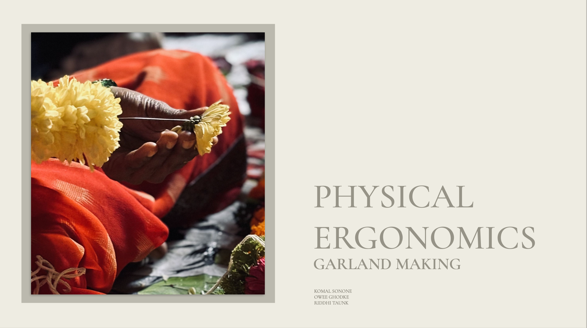

Community Listening
Vocal for Local
Street vendors in Pune were quietly losing customers as shopping moved online. Through conversations and market observations, we mapped what that shift actually cost the people living it.

UX Design Researcher UAL, London

Community Listening
Street vendors in Pune were quietly losing customers as shopping moved online. Through conversations and market observations, we mapped what that shift actually cost the people living it.
Tactile Design
Garland makers absorb real physical harm from repetitive work. Using RULA and REBA assessments alongside fieldwork, we prototyped a rethought vending stall built around their bodies.

Sensory Environments
Sound shapes how well people think — but nobody treats it that way. I tracked sound levels across university spaces and visualised what’s usually invisible.

Participatory Research
What if wayfinding worked through touch instead of sight? At Selfridges, I prototyped a tactile navigation system through material experiments and iterative making.